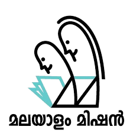

Upcoming Events

Malayalam Mission
Malayalam Mission
Goa Chapter
Praveshanolsavam 2025
&
Sugathanjali
Kavithalapana Malsaram
📅 27th July 2025
📍 Sree Narayana Guru Society Sabha Mandapam, Ponda
മലയാളം മിഷൻ
ഗോവ ചാപ്റ്റർ
പ്രവേശനോത്സവം 2025
&
സുഗതാഞ്ജലി
കവിതാലാപന മത്സരം
📅 ജൂലൈ 27, 2025
📍 ശ്രീ നാരായണ ഗുരു സൊസൈറ്റി സഭാമണ്ഡപം, പൊണ്ട
Kerala Kala Kendram, Margao
Onaghosham 2025
📅 September 27 & 28, 2025
Stay tuned for updates...
കേരള കലാ കേന്ദ്രം, മർഗാവ്
ഓണാഘോഷം 2025
📅 സെപ്റ്റംബർ 27 & 28, 2025
കൂടുതൽ വിവരങ്ങൾക്ക് കാത്തിരിക്കുക...